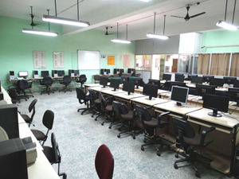
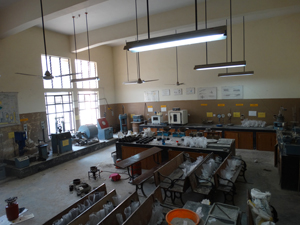
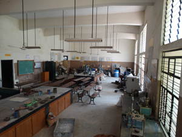

Laboratories:






CIVIL Department
The department of Civil Engineering was established in the year 1980 with a students’ intake of 60. The intake was increased to 120 from academic year 2012-13. It is headed by Dr. Nanjundaswamy Sateesh Kumar., who serving this institution from the past 30 years. The department has Research Centre since 2010, where 14 candidates are pursuing Ph.D., It also has M.E degree course in Structural Engineering since 2011. ·The department has teaching staff members comprising of 04 doctorates, and rest post graduates. 07 of the staff members are working in this institution from the past over 25 years. There are 07 supporting staff members. The present students’ strength is 462 including about 103 girls. · It has bagged FIVE university ranks. The department was accredited twice by National Board of Accreditation (NBA), New Delhi, during 2004-2007 and 2007-2010 and and 2016-2018. The department was granted permanent affiliation to VTU from 2007 to 2013. There are 3483 titles with 6494 volumes of Civil Engineering books in the Main Library. The department has its library with over 1000 books. The department submitted 16 project proposals for funding of which 07 projects worth Rs 97.0712 Lakhs received sanction. · It has obtained and executed 02 R&D projects worth Rs. 19.78 lakhs, 02 MODROBS projects worth Rs. 13.16 lakhs, about 15 KSCST students’ projects worth Rs. 1.0 lakh. 02 R&D projects worth Rs 55.9512 lakh are under progress. ·The department faculty members have published over 215 research papers, organized over 84 programmes and attended over 205 programmes. They have presented papers in international conferences held in USA, Canada, Sydney, Beijing, Melbourne, London etc. Ten Interactive Technical Meets of practicing civil engineers, contractors, cement dealers etc. were conducted in association with Grasim Industries, UltraTech Cement, ACC Cement etc.. Dr. N S Kumar, Dr. Mohamed Ilyas Anjum, Dr. G S Munawar Pasha, Professors, along with another colleague, have authored Eleven books and are on the panel of reviewers for international journals, VTU LIC and NBA expert team 34 invited Lectures were delivered by Staff members of the Dept., both in the parent organization and other reputed institutes, including FOREIGN UNIVERSITY. The department has prepared large number of Teaching Aids and Charts and also houses a large collection of working models, which are used during lectures. The civil engineering students graduating from the department are well placed throughout the country as well as abroad. It has strong Consultancy and Materials Testing facilities and has earned over Rs. 25.0 lakhs as consultancy fees so far. The department is approved by Government of Karnataka for third party inspection of all governmental works in Ramanagara district. It publishes its half yearly news letter and sends to all colleges offering Civil Engineering degree course in Karnataka, regularly since the past 15 years. The department conducted one Short Term Computer Course of 21 days and another one of 10 days duration for the supporting staff of the college and trained them in MS Word and Excel packages besides training in the use of internet. A short-term Computer Training Course for the School teachers of Ramanagaram town was conducted in which 20 school teachers were trained. A four Days “Laboratory Training Course for Civil Engineers” from Global Quality Inspection & Certification (GQIC), Mysore, was conducted in the department. A one week “Masons Training Programme” was jointly conducted with Grasim Industries Ltd.. The departmental faculty has developed Softwares which are used in the conduct of examinations, faculty evaluation by students and result analysis. Planning, Analysis and Design of six buildings in the college campus and a detailed proposal for Rain Water Harvesting was prepared by the department. Three of these buildings have been constructed. Digitization project for the campus was also done.
To Transform the Department into a Centre of Excellence producing Quality Civil Engineers equipped with knowledge, skill, character and capability to compete nationally and globally.
To provide high quality Technical Eduation and Training to the budding Civil Engineers to nurture excellent civil engineering skills, human and social values, national and global competence.
1.To produce, through quality education, highly capable civil engineers equipped with strong civil engineering and allied fundamentals necessary to face the professional competition and achieve excellence.
2.To produce civil engineers who can demonstrate their analytical, design skills and abilities to apply the principles of mathematics, basic sciences and engineering in effectively overcoming civil engineering problems and challenges in their professional career.
3.To produce civil engineers with practical knowledge, positive attitude, sense of responsibility and strong professional ethics clubbed with zeal for lifelong learning and research.
(a) an ability to apply knowledge of mathematics, science, and engineering,
(b) an ability to design and conduct experiments, as well as to analyze and interpret data,
(c) an ability to design a system, component, or process to meet desired needs within realistic constraints such as economic, environmental, social, political, ethical, health and safety, manufacturability, and sustainability,
(d) an ability to function on multidisciplinary teams,
(e) an ability to identify, formulate, and solve engineering problems,
(f) an understanding of professional and ethical responsibility,
(g) an ability to communicate effectively,
(h) the broad education necessary to understand the impact of engineering solutions in a global, economic, environmental, and societal context,
(i) a recognition of the need for, and an ability to engage in life-long learning,
(j) a knowledge of contemporary issues, and
(k) an ability to use the techniques, skills, and modern engineering tools necessary for engineering practice.
E-mail: hoddce@gmail.com
Laboratories: